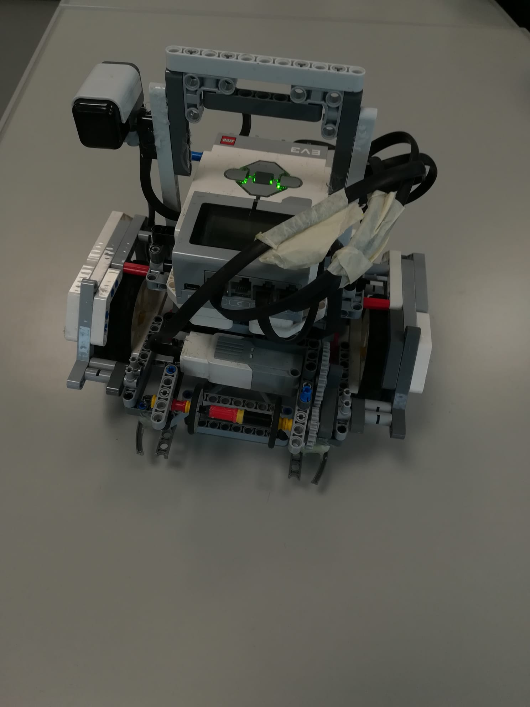

Von links nach rechts: Dennis Skurka (Programmierer), Julius Kimpfler (Programmierer und Konstrukteur), Jan Müller (Konstrukteur) und Felix Wiedermann (Konstrukteur).
Unser Fußballroboter "Ernie"
Er besteht aus zwei Ultraschallsensoren, einem Ballsensor und einem Kompasssensor. Dazu wurde der EV3 von Lego Mindstorms sowie RobotC und Visual Studio Code. Der Roboter wurde in C programmiert.
Der Dribbler wird benutzt um den Ball an unserem Roboter zu halten und den Gegner auszudribbeln
Sie werden verwendet um den Abstand zu den jeweiligen Banden des Spielsfeldes zu messen.
Er wird benutzt um die richtung des Tores am Anfang des Spiels zu bestimmen.
Der Ballsensor wird benutzt um die Richtung wo sich der Ball befindet zu bestimmen. Das tut er indem er das IR-Signal des Balles erkennt und eine Zahl von 1-9 oder 0 (nicht erkannt) ausgibt die 1 steht für ganz links die 5 für geradeaus und die 9 für ganz rechts.
Website erstellt von: Dennis Skurka
Bilder fotographiert von: Felix Wiedermann